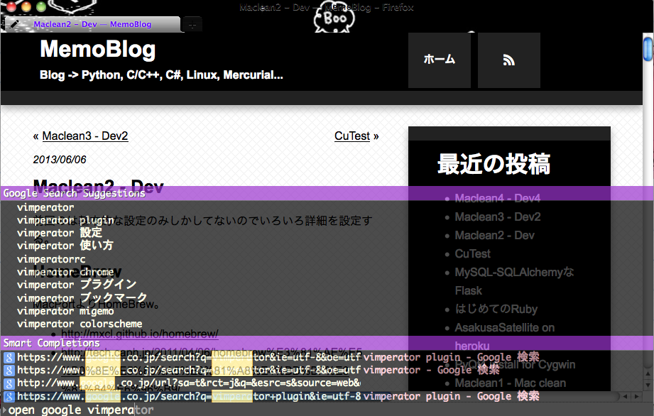

Emacs Evilという新しいエディタ
emacsに入門して早６時間。
そろそろVimキーバインドが恋しくなってくる頃でしょうか。
Ctrlキーを押している小指が心配でそわそわしてくる頃ですね。
そんなEmacsをダークサイドに落とすことのできるプラグイン。それがEvil。
Install
package.elを搭載したemacs24ならすぐにダークサイドに落とすことが出来る。
$ emacs
M-x list-package
C-s evil
evilにカーソルが当たっている状態でixと打ち込むとインストールされる。
そのままC-x C-f ~/emacs.d/init.elと打ち込んで以下を追加する。
(require 'evil)
(evil-mode 1)
Emacsを再起動するとCtrlの呪縛から開放されていることがわかります。
普段慣れていたVimのキーバインドに安らぎを感じるでしょう。
もしかしたら、モードがあることに喜びを感じてしまうかもしれません。
Evilなプラグイン
公式
- evil-surround
- evil-number
- evil-leader
- evil-rails
- evil-nerd-commenter
taraoさんのEvilプラグイン
などなど色々あるようです。
しかし、まだまだEmacs力が足りずにプラグインを入れるのに四苦八苦しているので、まだ今度ということで。
emacs入門 - 24.3 & 設定ファイル
emacsでテキストの編集ができるようになりましたが、まだメモ帳程度のEmacs力しかないのでもう少し高みを目指します。
Install emacs 24.3
いつもの如く、wget -> ./configure -> make && make install
$ yum install gcc make ncurses-devel giflib-devel libjpeg-devel libtiff-devel
$ cd /ダウンロードするフォルダ
$ wget http://ftp.gnu.org/pub/gnu/emacs/emacs-24.3.tar.gz
$ tar zxvf emacs-24.3.tar.gz
$ cd emacs-24.3.tar.gz
$ ./configure --without-x --without-selinux
$ make
$ sudo make install
すんなり24.3にバージョンアップした。
今のところ以下の変化を感じた。
- emacs -nwとしなくても端末上で起動する。(GUI版がインストールされていないから?–without-xの効果かも?)
- チュートリアルが読みやすい。21は見切れてたりしてた。
- 色が付いてる。
設定ファイル
調べたところによると以下の構成がいい感じらしい。
~/.emacs.d/
elpa/
init.el
~/.emacsに設定を書くのは時代遅れらしい。
init.el
設定はここに書き記しておく。きっと.vimrcのようなものだろう。
色んな人のinit.elを眺めてみてはじめはコピペから始めるといいだろう。
参考にさせて頂いたinit.el
- Emacsの環境整備(~/.emacs.d/init.el) - 結城浩のはてな日記
- 計算物理屋の研究備忘録 |Emacs 24のpackage管理機能を使う
- まあそのうち: Emacs 設定いろいろ [Emacs24 (Cocoa Emacs) on Mac OS X]
;;
;; init.el
;;
;; Language.
(set-language-environment 'Japanese)
;; Coding system.
(set-default-coding-systems 'utf-8)
(set-keyboard-coding-system 'utf-8)
(set-terminal-coding-system 'utf-8)
(set-buffer-file-coding-system 'utf-8)
(prefer-coding-system 'utf-8)
;; Package Manegement
(require 'package)
(add-to-list 'package-archives '("melpa" . "http://melpa.milkbox.net/packages/") t)
(add-to-list 'package-archives '("marmalade" . "http://marmalade-repo.org/packages/"))
(package-initialize)
日本語設定とパッケージの追加を書いただけ。
プラグインは.emacs.d/elpa/にインストールされる。
知ってるプラグインはanythinとevilなのでそのあたりについての記事でも書こう。
emacs入門 - Tutorial
身の回りにemacs使いがほとんどいなく、新人にemacsマジ使ったほうがいいとか言って、emacs使いにしようとしているが一向にならないので自分が人柱になってみる。
yumで入れた21.4.1を使ってみる。
$ emacs
と打ち込んでもGUIのほうが起動してしまってうざ。。。ってなっても
$ emacs -nw
とすれば、端末上で起動してくれる。
チュートリアル
C-h C-h
ヘルプのヘルプ。
いろんなヘルプ機能があるが今はスルー。
C-h tがチュートリアルだとわかるのでやってみる。
C-h t
CtrlとAltを良く使う。AltはMetaキーと呼ぶらしい。略表記はM-。
emacsから逃げ出したいときはC-x C-cをタイプする。
チュートリアルの途中では、C-zでサスペンドするのがオススメされている。fgで復活できる。
C-v M-v
１ページ進む、戻る。(vimでいうC-f C-b)
C-b C-p C-n C-f
カーソル移動。覚えられないので矢印キーを使う。
C-g
緊急停止。emacsのコマンドがハングしたときなどにC-g。
C-k C-y
文末まで削除＆その削除内容のコピー。
C-x u
Undo
ファイル操作
C-x C-f
ファイルをミニバッファから開けます。
C-x C-f newfile.txtとするとnewfile.txtが新規作成されます。
C-x C-s
現在のバッファのファイルを保存します。
バッファ
C-x C-b
バッファの一覧が見れます。
C-x C-fではバッファ一覧からtabキーで補完ができます。
C-x b
バッファからファイルを開きます。
検索
C-s C-r
前方検索、後方検索。
エコーエリアに”l-search”と表示されて文字を打ち込むとインクリメンタルサーチできる。
複数ウィンドウ
C-x 2
現在のバッファを２つ目のバッファにも表示します。
C-x o
別のウィンドウで開いているバッファにカーソルを移動します。
tmuxのキーバインドはemacsからきていたのか。
C-M-v
他のウィンドウで開いているバッファのページを進めます。
別ウィンドウで開いているバッファを参照しながらの作業をするときに便利。
C-x 1
現在カーソルのあるウィンドウ以外を閉じます。
C-x 4 C-f
このコマンドの後に続くファイルを横分割で開きます。
感想とか
Ctrl無理。。。
emacsの最新版は24.3だとか。24.3にはデフォルトでパッケージ管理ツールが入っているらしいので、きっと自前でmakeしないといけないんだろうな。
もう少しemacsがんばってみる。
さくらVPSで適度に環境を整える
CentOSのバージョン確認
# cat /etc/redhat-release
CentOS release 6.4 (Final)
# arch
x86_64
EPELリポジトリの追加
# wget http://ftp-srv2.kddilabs.jp/Linux/distributions/fedora/epel/6/x86_64/epel-release-6-8.noarch.rpm
# rpm -ivh epel-release-6-8.noarch.rpm
package epel-release-6-8.noarch is already installed
デフォルトであるんですか、まさか、
# git --version
git version 1.7.1
git入ってる。いろいろ確認してみる。
# make --version
GNU Make 3.81
# automake --version
automake (GNU automake) 1.11.1
# autoconf --version
autoconf (GNU Autoconf) 2.63
# python --version
Python 2.6.6
欲しいけど入ってないリスト。
- zsh
- screen
- vim 7.3(+python, +ruby)
- ruby
- easy_install
easy_installとpip入れる
# yum install python-devel
# yum install python-setuptools
# easy_install pip
zshにする
# yum install zsh
# chsh
Changing shell for root.
New shell [/bin/bash]: /bin/zsh
ユーザー追加する
# useradd hoge
# passwd hoge
# su hoge
$ mkdir ~/.ssh
$ chmod 700 ~/.ssh
$ exit
# exit
% scp ~/.ssh/id_rsa.pub hoge@xxx.xxx.xxx.xxx:~/.ssh/authorized_keys
% vim ~/.ssh/config
Host sakura
HostName xxx.xxx.xxx.xxx
User hoge
% ssh sakura
hogeユーザーでsshログインできる。
rootログイン禁止
# vim /etc/ssh/sshd_config
下記の２箇所を変更
#PermitRootLogin yes
PermitRootLogin no
#PasswordAuthentication yes
PasswordAuthentication no
# /etc/init.d/sshd restart
sudoを使ってsshポート番号を変更
$ which sudo
/usr/bin/sudo
$ su
# visudo
コメントアウトを解除する
## Allows people in group wheel to run all commands
%wheel ALL=(ALL) ALL
# vim /etc/group
wheel:x:10:hoge
# exit
$ sudo vim /etc/ssh/sshd_config
#Port 22
Port XXXXXX
$ sudo /etc/init.d/sshd restart
$ exit
% vim ~/.ssh/config
変更したポート番号を追加する
Port XXXXX
% ssh sakura
$ chsh
/bin/zsh
% echo $SHELL
/bin/zsh
他のマシンからssh
鍵を追加する。
% scp id_rsa_other.pub sakura:~/
% ssh sakura
$ cat id_rsa_other.pub >> ~/.ssh/authorized_keys
ruby - rbenv
% sudo yum install ruby
% ruby --version
ruby 1.8.7 (2011-06-30 patchlevel 352) [x86_64-linux]
そのままやって1.9.3-p429入れる。
python - pythonbrew / virtualenv
pythonbrew
% curl -kL http://xrl.us/pythonbrewinstall | bash
% vim ~/.zshrc
# pythonbrew
[[ -s $HOME/.pythonbrew/etc/bashrc ]] && source $HOME/.pythonbrew/etc/bashrc
export PYTHONBREW_ROOT=$HOME/.pythonbrew
% curl -kLO http://xrl.us/pythonbrewinstall
% chmod +x pythonbrewinstall
% source ~/.zshrc
% ./pythonbrewinstall
virtualenv/virtualenvwrapper
% python --version
Python 2.6.6
% sudo pip install virtualenv virtualenvwrapper
% which virtualenvwrapper.sh
/usr/bin/virtualenvwrapper.sh
% vim ~/.zshrc
export WORKON_HOME=$HOME/.pythonenvs
source /usr/bin/virtualenvwrapper.sh
% source ~/.zshrc
vim73 +python +ruby
ソースコードからビルドする。
$ sudo pip install mercurial
$ yum install ncurses-devel
$ yum install python-devel -y
$ yum install ruby-devel -y
$ hg clone https://vim.googlecode.com/hg/ vim73
$ cd vim73
$ ./configure \
--with-features=huge \
--enable-multibyte \
--disable-selinux \
--disable-nls \
--disable-gui \
--without-x \
--enable-pythoninterp \
--enable-rubyinterp
$ make
$ sudo ake install
参考記事
screen 4.01
$ git clone git://git.savannah.gnu.org/screen.git
$ cd screen/src
$ ./autogen.sh
$ ./configure --prefix=/usr/local --enable-pam --enable-locale --enable-telnet --enable-colors256 --enable-rxvt_osc
$ make
$ sudo make install
開発用の環境はできたので、次はwebサーバの設定とかを。
FORTRANコードを動かしてみる on Cygwin
計算科学系の文献ではFortranソースを見ることが時々あリます。
自分も時々見かけるのでそんな時のためにメモを残しておこうかと。
環境: Cygwin, Vim, Fortran90
Let’s FORTRAN!
「！」以外で始まる各行は先頭に６文字以上スペースを入れてください。
!?
「！」以外で始まる各行は先頭に６文字以上スペースを入れてください。
!!??
autocmd FileType fortran setl textwidth=6
どこかにあったFortranソース。
W = (/ 1, 2, 3, 4, 5 /)
SIG=2
DO 30 J=1,5
IF(SIG.GT.W(J)) GOTO 30
PRINT * , J
SIG=W(J)
30 CONTINUE
Error: Unexpected end of file in ‘/path/to/sample.f90’
なんかだめ。
さらっとGoogle先生で調べたけどわからなかったが、FortranソースにはPROGRAMとかいう記述が必要だったような。。。
PROGRAM SAMPLE
INTEGER W(5)
W = (/ 1, 2, 3, 4, 5 /)
SIG=2
DO 30 J=1,5
IF(SIG.GT.W(J)) GOTO 30
PRINT * , J
SIG=W(J)
30 CONTINUE
END PROGRAM SAMPLE
2,3,4,5と表示されたということで実行できた。PROGRAMが必要なのね。
quickrun.vimを使って実行しています。quickrun便利(使いこなせてないけど)
型
| Type | Description |
|---|---|
| INTEGER | 整数型 |
| REAL | 実数型 |
| DOUBLE PRECISION | 倍精度浮動小数点型 |
| COMPLEX | 複素数型 |
| LOGICAL | 論理型 |
| CHARACTER | 文字型 |
倍精度実数の使用
REAL(8) :: x, y, z
implicitであらかじめa-h, o-zで始まる変数名は倍精度実数とする指定をすることが多い。
IMPLICIT REAL*8 (A-H, O-Z)
implicitはプログラムの先頭で行う。
0.0の扱い
! 単精度0.0で初期化(小数点7桁以下の精度は保証されない)
REAL SUM = 0.0
! 精度が重要である場合には倍精度で初期化する
SUM = 0.0D0
暗黙の約束
i, j, k, l, m, nで始まる変数は整数型でそれ以外は実数型と扱われる。
この約束を取り消すには
IMPLICIT NONE
とする。
演算子
| Operator | Description |
|---|---|
| + | + |
| - | - |
| * | * |
| / | / |
| x**n | x n |
| sin(x) | sin(x) |
| cos(x) | con(x) |
| tan(x) | tan(x) |
| atan(x) | atan(x) |
| exp(x) | e x |
| log(x) | log(x) |
| sqrt(x) | sqrt(x) |
| abs(x) | abs(x) |
| sign(x) | x / |x| |
入出力
PRINT * , A
*はフォーマット指定。*を指定すると適当な書式が選択される。(コンパイラ依存)
WRITEで同じ事ができますが、冗長になってしまうのでPRINTを使う。
READ * , A, B, C
PRINTと同様に*を指定すると、適切な書式が自動で指定されます。
- ENTERが入力されるまで読み込みます
- 複数並べると、スペース区切りで読み込みを行います
配列
- インデックスはデフォルトでは1から
- メモリ上にはColumn Majorの順で配置される
REAL, DIMENSION(5) :: A
REAL B(5), C(5)
INTEGER, DIMENSION(3, 3) :: D
インデックスを0から指定したい場合は以下のように宣言する。
REAL A(0:5)
配列の初期化
! 全て0に初期化
REAL :: a(10) = 0
! 多次元配列も同様
INTEGER, DIMENSION(10, 10) :: b = 1
配列構成子
/(ここに配列の構成を記述)/
INTEGER A(5)
A = (/ 1, 2, 3, 4, 5 /)
INTEGER :: B(5) = (/ 1, 2, 3, 4, 5 /)
REAL :: C(6) = (/2., 4., 6., 8., 10., 12. /)
! 1,2,3,4,5 : DO型反復
INTEGER :: D(5) = (/ (i,i=1,5) /)
! 5,10,15,20,25,30
REAL :: E(6) = (/ (i*5,i=1,6) /)
reshape関数を使うことによって更に柔軟な指定が可能になります
! 1,3,5
! 2,4,6
REAL :: A(2,3) = RESHAPE( (/1., 2., 3., 4., 5., 6./), (/2,3/) )
REAL :: B(2,3) = RESHAPE( (/1., 2., 3., 4., 5., 6./), SHAPE(a) )
! DO型反復も使用可能
! 1,5,9
! 2,6,10
! 3,7,11
! 4,8,12
INTEGER :: C(4,3) = RESHAPE( (/ (i,i=1,12) /), SHAPE(b) )
一括代入
INTEGER A(3)
! 10,10,10
A = 10
! 11,11,11
A = A + 1
INTEGER B(3), C(3)
B = 10
C = 10
! 20,20,20
A = B + C
ループ
DO 20 I=1, M
DO 10 J=2, N
a(I,J) = I*M
10 CONTINUE
20 CONTINUE
GOTO文
GOTO 10
GO TO 10
10 IF A.LT.B PRINT * , A
if文
IF(A.LT.B) PRINT * , A
IF(A.GT.B) THEN
PRINT * , B
ELSE
PRINT * , A
IF(A.EQ.B) THEN
PRINT * , A
ELSE IF(A.LT.B) THEN
PRINT * , A
ELSE
PRINT * , B
比較演算子
| Operator | or | Description |
|---|---|---|
| A.LT.B | A < B | Less Than |
| A.LE.B | A <= B | Less than over Eaual to |
| A.EQ.B | A == B | EQual to |
| A.NE.B | A /= B | Not Equal to |
| A.GT.B | A > B | Greater Than |
| A.GE.B | A >= B | Greater than over Equal to |
論理演算子
| Operator | Description | Usage |
|---|---|---|
| .NOT. | not | .NOT. A.EQ.B |
| .AND. | and | A.EQ.B .AND. A.EQ.C |
| .OR. | or | A.LT.B .OR. A.LT.C |
| .EQV. | logical eq | A<0 .EQV. B<0 |
| .NEQV. | logical not eq | A<0 .NEQV. B<0 |
関数
PROGRAMではなくSUBROUTINEで宣言する
SUBROUTINE HOGE(A, B, C)
INTEGER A
REAL B
CHARACTER C
END SUBROUTINE
Tinkerer 1.2 Release!
Tinkererのテーマをいじろうかどうか迷っていた矢先にバージョンアップが。
しかも新テーマflatが。
Home — Tinkerer かっけぇ。
シンプルで良い感じ。
即conf.pyをいじった。
pipでパッケージを更新するのはなにげに初めてだった。
$ workon Tinker
$ pip install tinkerer -U
$ vim conf.py
dark -> flat
$ tinker -b
$ hg add
$ hg ci -m "use flat!"
$ hg push
pip updateかあるのかと思ったけど、-U(or –upgrade)オプションを付ければいい。
Maclean4 - Dev3
MacTips的な。
- システム環境設定
- キーボード
- 修飾キー...
- Caps Lock キー
- Controlに変更
この5ステップでCapsLockキーをControlにできる。
Python環境
pythonbrewとvirtualenv&virtualenvwrapperを入れる。
virtualenv
$ pip install virtualenv virtualenvwrapper
.zshrcに以下を書き込む
# virtualenv setting
VIRTUALENVWRAPPER_PYTHON=/usr/local/bin/python
export WORKON_HOME=$HOME/.pythonenvs
source /usr/local/share/python/virtualenvwrapper.sh
Macの場合、virtualenvwrapper.shは/usr/local/share/pythonにある。
Linuxとかだと、/usr/local/bin。
Vim
をコピペして:NeoBundleInstallで完成。
日本語を使うのであれば、iTerm2のPreferencesのProfiles/Textにある
Double-Width Characters: Treat ambigous-width characters as double widthにチェックを入れておく。(でないと時々とんでもなくずれたりする)
Sublime Text 2
Sublime Text: The text editor you’ll fall in love with
なんかあった時のためのGUIエディタはSublimeにする。
プラグインやら設定やらできるみたいだが、やる気が出た時のためにとっておこう。
Mercurial
gitよりもhgを愛用中。Python環境もできてやっとインストール。
$ pip install mercurial
$ vim ~/.hgrc
[ui]
username = hoge hogeo <hoge@hoge.com>
pipでインストールしたものは/usr/local/share/pythonに入るのでパスを通しておかないとhgコマンドが叩けない。
$ vim ~/.zshrc
PATH=/usr/local/bin:/usr/local/share/python:$HOME/.rbenv/bin:$PATH
MacではPATHをこんな感じに設定しておくことにする。
SSH
サーバとかGithubやらBitbucketを使う際にsshが必要。
$ ssh-keygen
とりあえず、作成されたid_rsa.pubをコピーしてGithub、Bitbucketに登録。
完成したMac
- Firefox
- Vimperator
- LastPass
- Firebug
- MyBookmarks
- iTerm2
- zsh 4.3.9
- screen 4.01.00devel 2-May-06
- vim 7.3.p923 +python +ruby
- Python 2.7.5
- pythonbrew
- virtualenv
- Ruby 1.9.3
- rbenv
- Git 1.8.3
- Mercurial 2.6.2
- Sublime Text 2
- Mozc
- Alfred
Maclean3 - Dev2
zsh + screen + vim(+python +ruby)な環境を作る。
ビルド環境
$ automake --version
automake (GNU automake) 1.10
Written by Tom Tromey <tromey@redhat.com>
and Alexandre Duret-Lutz <adl@gnu.org>.
Copyright 2006 Free Software Foundation, Inc.
This is free software; see the source for copying conditions. There is NO
warranty; not even for MERCHANTABILITY or FITNESS FOR A PARTICULAR PURPOSE.
$ autoconf --version
autoconf (GNU Autoconf) 2.61
Copyright (C) 2006 Free Software Foundation, Inc.
This is free software. You may redistribute copies of it under the terms of
the GNU General Public License <http://www.gnu.org/licenses/gpl.html>.
There is NO WARRANTY, to the extent permitted by law.
Written by David J. MacKenzie and Akim Demaille.
ちょっと古い。
$ brew install automake
$ brew install autoconf
$ automake --version
automake (GNU automake) 1.10
Written by Tom Tromey <tromey@redhat.com>
and Alexandre Duret-Lutz <adl@gnu.org>.
Copyright 2006 Free Software Foundation, Inc.
This is free software; see the source for copying conditions. There is NO
warranty; not even for MERCHANTABILITY or FITNESS FOR A PARTICULAR PURPOSE.
変わってねーし。
どうにかせねば。
brewを使いこなす
ＨｏｍｅＢｒｅｗの仕組みについてまとめておく - それマグで！
HomeBrewについてはこのエントリが詳しかった。
brewでinstallしたパッケージは
/usr/local/Celler
にインストールされて、/usr/local/binにシンボリックリンクが作成される。
gitは良い感じにインストールされてたけど、automakeとautoconfはシンボリック作成されてなかった。
/binとか/usr/binとかに先に入ってたらダメなのか？
試しにwget入れてみたけど、/usr/local/binにシンボリックリンクある。そういうことなのか・・・
シンボリックリンクない場合
シンボリックリンク作成されてなかった場合、以下のコマンドを実行する。
$ cd /usr/local/bin
$ lndir ../Cellar/<package-name>/<version>/bin/ ./
PATHの優先順位を変更
/binや/usr/binより/usr/local/binを優先させる。
$ vim ~/.zshrc
PATH=/usr/local/bin:/usr/local/sbin:$PATH
Zsh
$ zsh --version
zsh 4.3.9 (i386-apple-darwin10.0)
$ which zsh
/bin/zsh
$ chsh
変更 /bin/bash -> /bin/zsh
デフォルトで入ってるのでok
Screen
$ screen --version
Screen version 4.00.03 (FAU) 23-Oct-06
縦分割はできたほうがやる気でるので4.01を使う。
前の自分の記事で最新版screenを入れる方法についてまとめてある。
2013/06/03現在ではパッチを当てていた部分は修正されているので、パッチ当てなくてもいい。
HomeBrewのパッケージ内には入らないので注意する。
Python
Python 2.7.5を標準にする。
$ brew install python
以下のパッケージがインストールされる
- pkg-config
- readline
- sqlite3.7.17(デフォルトが入っているので/usr/local/binにシンボリックリンクは作成されない)
- gdbm
- python2.7.5
$ python --version
Python 2.7.5
Ruby
Ruby 1.9.3を標準にする。
$ brew install ruby-build
$ brew install rbenv
readlineが必要だがpythonの時の依存関係でインストール済みなので入れなくてもいい。
あとは自分のエントリにも書いてあるように.zshrcの設定とruby-buildプラグインを入れる。
$ ruby --version
ruby 1.9.3p429 (2013-05-15 revision 40747) [x86_64-darwin10.8.0]
Vim
+python +rubyのVimを作る。(なので際にPythonとRuby入れた)
vim-ruby入れようとしてbrewのvimで嵌った - rochefort’s blog
ここのFormulaを参考にする。
/usr/local/Library/Formula/vim.rbの./configureのオプションに以下を追加。
"--disable-nls",
"--enable-pythoninterp",
"--enable-rubyinterp",
$ brew install vim
$ source ~/.zshrc
$ vim --version
VIM - Vi IMproved 7.3 (2010 Aug 15, compiled Jun 3 2013 22:51:14)
MacOS X (unix) version
Included patches: 1-923
Maclean2 - Dev
前回のは基本的な設定のみしかしてないのでいろいろ詳細を設定する。
HomeBrew
MacPortよりHomeBrew。
- http://mxcl.github.io/homebrew/
- http://tech.caph.jp/2011/04/06/homebrew%E3%81%AE%E5%B0%8E%E5%85%A5%E3%81%A8%E4%BD%BF%E3%81%84%E6%96%B9/
$ ruby -e "$(curl -fsSL https://raw.github.com/mxcl/homebrew/go)"
$ brew install git
$ brew doctor
$ brew update
開発系なパッケージ管理はHomeBrewからやろう。
Growl
Mac用のポップアップ通知システム。
1.3から有料になってしまっている。
1.2なら無料。growl - A notification system for Mac OS X. - Google Project Hosting
というわけで1.2.2をインストール。
最新版との違いは調べていないので分からないが、なんか不具合があってから調べるで問題ないかな。
コードをhgで落としてビルドするという荒業を使えば1.3以降のバージョン(最新版)も使えるみたい。
Lionからは標準の通知システムが有るらしい。いいな。
Firefox
プラグイン
- vimperator
- lastpass
- firebug
- mybookmarks
アドオンで検索すれば全部見つかるのでインストールからの再起動。
テーマはこれ。
Monokuro Boo Pigs :: Add-ons for Firefox
モノクロのブタさんを愛用。
vimperator
Vimmerの必需品。もう普通のFirefoxには戻れない。
~/.vimperatorrcに配置。
カラースキーム、プラグインのフォルダ配置。
プラグインはリポジトリから落として、必要に応じてコピーする。
vimpr/vimperator-plugins · GitHub
$ cd ~/.vimperator
$ git clone https://github.com/vimpr/vimperator-plugins
とりあえずこれだけ入れる。
- _libly.js
- _smooziee.js
- vimperator_copy.js
Firefox20からjsまわりが変更になってるのでちょくちょくプラグイン更新したほうがいいかも。
カラースキームはGistに。
フォルダ構成はこうなる。
> .vimperator
> colors
> info
> plugin
> vimperator-plugins
結果こんなFirefoxになる。
ゆたぽん
フォントがゆたぽんじゃないと体調が悪くなってくるので早く入れないと。
Macに.ttc投げてもダメっぽいので(試してないけど)、otfに変換してインストールする。
otfのゆたぽんをシェアウェアとしてリリースしてあった。ただじゃないと嫌なので頑張る。(ベータ版はタダ)
Macにフォント「ゆたぽん（コーディング）」をインストールしてみた。 - Life is Over
このエントリで紹介している方法は以下の感じ
- Windowsにゆたぽんをダウンロード
- UniteTTCなるアプリでttfに分離
- OTEditなるアプリ(無料は30日間)でttfをotfに変換 -> よくわからなかったらここ TrueTypeフォントからOpenTypeフォントへの変換方法
- Macにotfを移動して、otfファイルをダブルクリックでFontBookに追加
- iTerm2のPreferencesでフォントをゆたぽんに
CuTest
C言語軽量テストフレームワーク。
CuTest.hとCuTest.cで構成されるフレームワーク。
機能は最小限だが、ソースで提供されているのでプロジェクトに気軽に組み込める。
というわけなのでダウンロードするだけで使える。
Download CuTest: C Unit Testing Framework from SourceForge.net
Assert Macro
Assertマクロは以下の13個。
#define CuFail(tc, ms)
#define CuAssert(tc, ms, cond)
#define CuAssertTrue(tc, cond)
#define CuAssertStrEquals(tc,ex,ac)
#define CuAssertStrEquals_Msg(tc,ms,ex,ac)
#define CuAssertIntEquals(tc,ex,ac)
#define CuAssertIntEquals_Msg(tc,ms,ex,ac)
#define CuAssertDblEquals(tc,ex,ac,dl)
#define CuAssertDblEquals_Msg(tc,ms,ex,ac,dl)
#define CuAssertPtrEquals(tc,ex,ac)
#define CuAssertPtrEquals_Msg(tc,ms,ex,ac)
#define CuAssertPtrNotNull(tc,p)
#define CuAssertPtrNotNullMsg(tc,msg,p)
引数の説明
- tc
- CuTest*型、CuTest構造体のインスタンスを入れる。すべて共通。
- ms
- メッセージ(char*)
- cond
- True(1) or False(0)
- ex
- expectedの略、期待される値
- ac
- actualの略、実際の値
- dl
- deltaの略、double比較の際に用いる誤差
- p
- pointer
Usage
このCuTestはmake_tests.shというスクリプトが同封されていて、テストコードが入ったフォルダで実行する。
今回サンプルとしてtest.cを作成した。
#include <stdlib.h>
#include <string.h>
#include "CuTest.h"
typedef struct Lens
{
char* name;
int radius;
} Lens;
static Lens* lens;
void Test_setup(CuTest* tc)
{
lens = malloc(sizeof(Lens));
lens->name = malloc(sizeof(char)*256);
strcpy(lens->name, "SiO2");
lens->radius = 5;
/*CuAssert(tc, "Setup", 1);*/
}
void Test_teardown(CuTest* tc)
{
free(lens->name);
free(lens);
/*CuAssert(tc, "Teardown", 0);*/
}
void Test_lens(CuTest* tc)
{
CuAssertStrEquals(tc, lens->name, "Si02");
CuAssertIntEquals(tc, lens->radius, 4);
}
void Test_Fail(CuTest* tc)
{
CuFail(tc, "失敗する");
}
void Test_Assert(CuTest* tc)
{
int cond = 0;
CuAssert(tc, "cond=0でアサートする", cond);
}
void Test_AssertTrue(CuTest* tc)
{
int cond = 0;
CuAssertTrue(tc, cond);
}
void Test_AssertStr(CuTest* tc)
{
char* actual = "Helle";
CuAssertStrEquals(tc, "Hello", actual);
// １つのテストメソッドに複数のAssertマクロを入れる場合
// 先に失敗すると次まで流れない。
CuAssertStrEquals_Msg(tc, "Helloじゃないじゃん！Typoじゃね？", "Hello", actual);
}
void Test_AssertStrMsg(CuTest* tc)
{
char* actual = "Helle";
CuAssertStrEquals_Msg(tc, "Helloじゃないじゃん！Typoじゃね？", "Hello", actual);
}
void Test_AssertInt(CuTest* tc)
{
CuAssertIntEquals(tc, 5, 6);
}
void Test_AssertDbl(CuTest* tc)
{
CuAssertDblEquals(tc, 1.01, 1.02, 0.001);
}
void Test_AssertDblMsg(CuTest* tc)
{
CuAssertDblEquals_Msg(tc, "Delta=0.001(こんな感じに誤差を書いたほうがいいかも)", 1.01, 1.02, 0.001);
}
void Test_AssertPtr(CuTest* tc)
{
char* str = malloc(sizeof(char)*5);
CuAssertPtrEquals(tc, NULL, str);
free(str);
}
CuSuite* StrUtilGetSuite()
{
CuSuite* suite = CuSuiteNew();
SUITE_ADD_TEST(suite, Test_setup);
SUITE_ADD_TEST(suite, Test_Fail);
SUITE_ADD_TEST(suite, Test_Assert);
SUITE_ADD_TEST(suite, Test_AssertTrue);
SUITE_ADD_TEST(suite, Test_AssertStr);
SUITE_ADD_TEST(suite, Test_AssertStrMsg);
SUITE_ADD_TEST(suite, Test_AssertInt);
SUITE_ADD_TEST(suite, Test_AssertDbl);
SUITE_ADD_TEST(suite, Test_AssertPtr);
SUITE_ADD_TEST(suite, Test_teardown);
return suite;
}
テストコードの作成は以下のように行う。
$ ./make-tests.sh test.c > main.c
$ gcc main.c test.c CuTest.c
$ ./a.exe or ./a.out
FFFFFFFFF
There were 9 failures:
1) Test_Fail: test.c:6: 失敗する
2) Test_Assert: test.c:12: cond=0でアサートする
3) Test_AssertTrue: test.c:18: assert failed
4) Test_AssertStr: test.c:24: expected <Hello> but was <Helle>
5) Test_AssertStrMsg: test.c:32: Helloじゃないじゃん！Typoじゃね？: expected <Hello> but was <Helle>
6) Test_AssertInt: test.c:37: expected <5> but was <6>
7) Test_AssertDbl: test.c:42: expected <1.010000> but was <1.020000>
8) Test_AssertDblMsg: test.c:47: Delta=0.001(こんな感じに誤差を書いたほうがいいかも): expected <1.010000> but was <1.020000>
9) Test_AssertPtr: test.c:53: expected pointer <0x0x0> but was <0x0x80011e20>
!!!FAILURES!!!
Runs: 9 Passes: 0 Fails: 9
今回はすべて失敗するコード。
Custom
ソースコードもテスト生成用のスクリプトも非常にシンプルで自分好みにカスタムするのは簡単そう。
例えば自分の場合こんなカスタマイズをするかもしれない。
- main文じゃなくてテスト関数をジェネレートする
- doubleの配列についてテストをしたいのでCuAssertDblArrayマクロを作成する
- setup/teardownを実装する
- シェルスクリプト以外の言語でテストを生成してもいいかもしれない
License
ライセンスはzlib License
このライセンスは以下の項目を守る必要がある
- 原作者名を正しく表記する(義務はない)
- 改変版のソースコードは、オリジナルのソフトウェアと混同しないものとする
- ライセンスファイルを削除してはならない
現在sourceforge上にZIPファイルが置かれているが、自分でカスタマイズすることを考えるとGithub上に乗せて管理したい。
Download CuTest: C Unit Testing Framework from SourceForge.net
Repos
リポジトリを作成した。
自分以外にもGithub上で管理してカスタマイズしているみたい。